Guttercrown
State of the Game
Guttercrown is a finished, deep, D&D-flavoured pit-fighting career game with a world worth reading about. Today it gained a reshot opening film, a filmed ending, weapon finishers, real sound, two tavern games and a controller pass. A bug from the sound pass that froze the intro film for new fighters was found and fixed by 11:30. David still needs one serious rethink before anyone outside the studio sees him.
Since last night
Added or improved (30 commits, 5:36 to 11:30 am)
- Finishers everywhere: nine weapon finishers (the thrown spear, legs-then-skull, the lodged mace…), two racial finishers per people, casting finishers (melt, unravel, pillar of salt), and animal-form and environmental kills (spikes, fire vent).
- Fighting look: per-weapon swings and guards, combo flourishes, directional dodge and flinch, robes that move, sand on knockback, a unique trait for every weapon.
- The opening film, reshot: 22 shots, about two minutes, with Tallow Row, the spiked pit, Marc's table, the war with Eireania and David in the Hour Garden. Tap advances a shot, hold skips the film.
- A filmed ending: seven shots after the Queen falls, with one shot particular to your ending.
- Sound: room reverb by place, weapon-specific hits, a crowd that follows the hype, a hush before a kill. No audio files.
- Sound fix (11:20): a first bout on a phone broke up the audio and stalled input. Now there's a hard cap on live voices (10 on touch devices, 22 elsewhere), rate limits on every sound, an output limiter, a single reverb (none on phones), and a light mode it drops into by itself if the page falls behind. A new
tests/sound-stress.jscovers it. - Sound, back to basics (11:28): the crowd murmur and reactions were filtered noise, and the limiter turned them into static on a phone. The noise crowd, the echo and the limiter are gone; the crowd is back to how it was before this morning. Weapon hits, finisher sounds, heartbeat, garden and throne sounds stay, capped and rate-limited.
- Intro fix (11:30): the weapon lookup is guarded, hit sounds can no longer throw, and the main loop always schedules its next frame, so one error can't freeze the game again. A new test,
tests/cine-plays-through.js, plays the film with no fighter. - New games: the Knuckle Table and the Knife Board on Tallow Row.
- Hour Garden: souls fight each other first, attacks on you are staggered, and giving up warns you twice.
- Phone and controller: a simulated-gamepad test of the whole opening, and pinned closing rows on long cards.
- Speed: each figure welded per joint (about 57 draw calls down to 33), and the market from about 500 to 310.
- Balance: named fighters +7% health and +5% damage to offset the new traits, pasts and natures.
From last night's list
- Fixed Random names no longer include Kael (Sorrel remains).
- Better The war and David's history now appear in the opening film, not only in a monologue.
- Better The repo bundles three.js, so the repo copy runs offline. The published page still loads it from a CDN.
- Better The repo now has tests: a controller run, filmed bouts, filmed cinematics and filmed endings.
- Not yet David is unchanged, and the opening film now gives him a shot on a gold throne.
- Not yet The five Player's Handbook subclass names are unchanged.
- Not yet Vexa still hits softer than the two gates before her.
- Fixed The intro-film freeze from the 11:03 sound pass, fixed at 11:30. I re-ran the film on the 11:30 build and it plays through to the builder.
Where it stands
What exists
- A fighter builder in six steps: class, blood (people), past, nature, arts (cantrip and technique), steel. Every weapon now has its own trait.
- A walkable undercity market with about 20 places and people: the Pit, the Fence, Marc, the Wisp Table, the Low Lamp, the Long Stair, stalls, the Oracle's cellar, and Tallow Row down to your hideout, with the Knuckle Table and the Knife Board.
- Real-time one-on-one bouts in a 3D isometric pit: stamina, guard, posture, counters, perfect dodges, heavy blows, mortal blows, a crowd meter.
- A career: undercard bouts, nine gates, the crown, defences, then three bouts up the Long Stair and a filmed ending.
- A management layer: hideout building with comfort and perks, a crew (the Tally) on jobs and raids, gear grades, weapon mastery, contracts, loans, gambling.
- A villain thread: David Roseinbeirg, who revives you, binds you after three deaths, and wants the throne.
What that means
- This is the more complete of your two games. Every system has an end state, and there is a credits-worthy ending.
- Three balance passes are logged, one "after play on a controller", and per the README, simulated careers for all six classes reach the crown with no script errors.
- The weak points are unchanged: clarity (too many layers before each bout), a thin middle of the climb, code that is getting harder to change safely, and one content problem that has to be fixed before release. Plus one new regression from this morning.
Frames from today's build
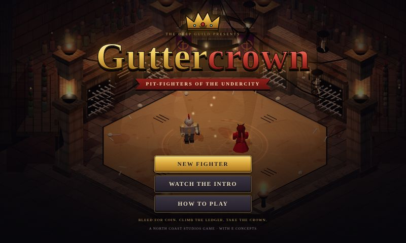
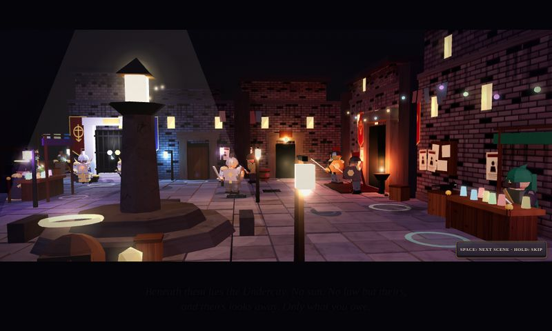
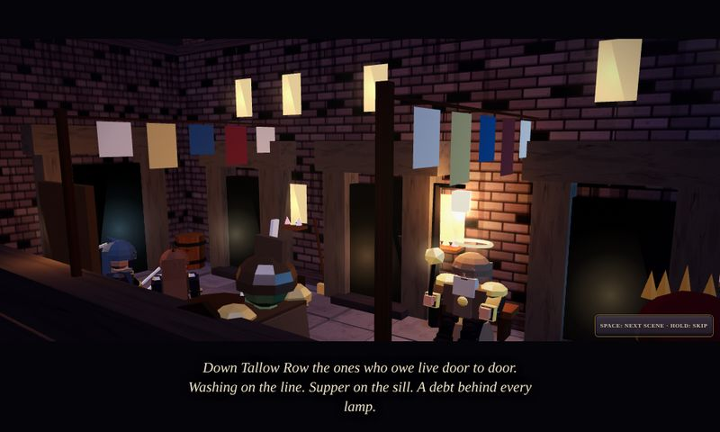
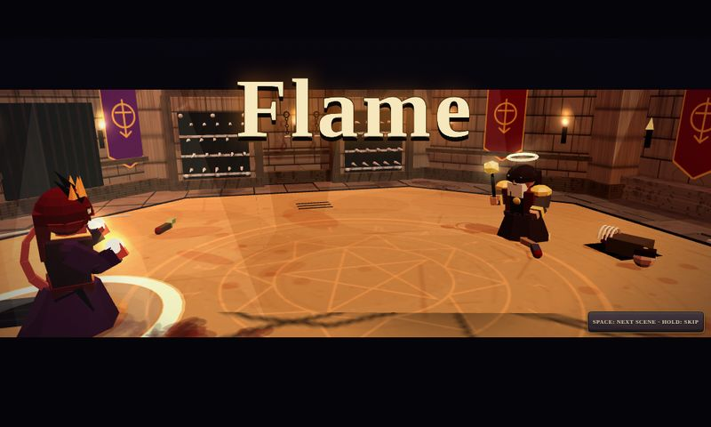
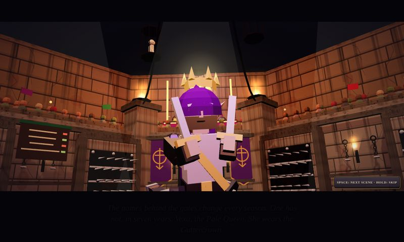
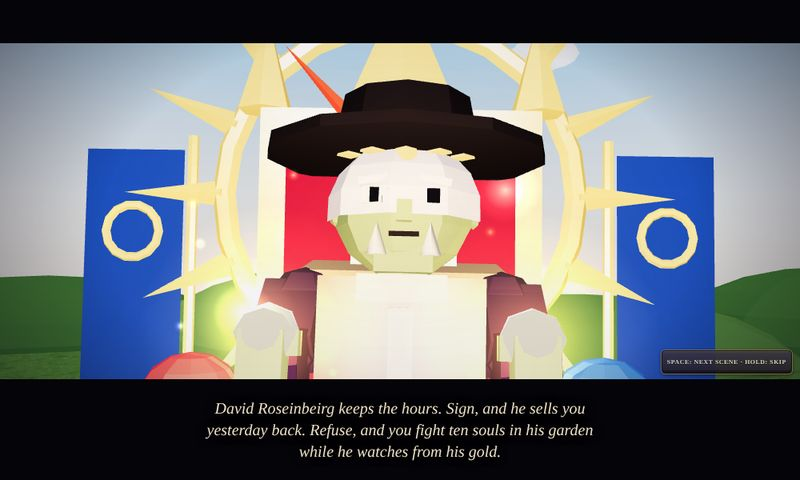
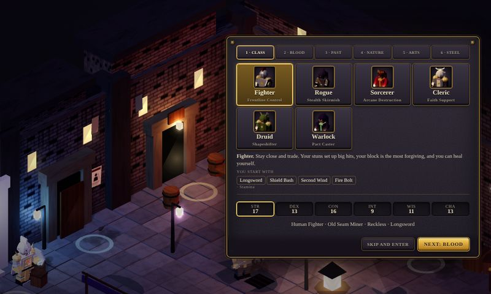
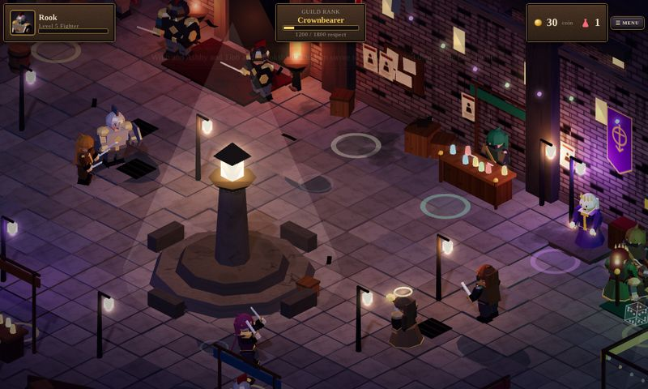
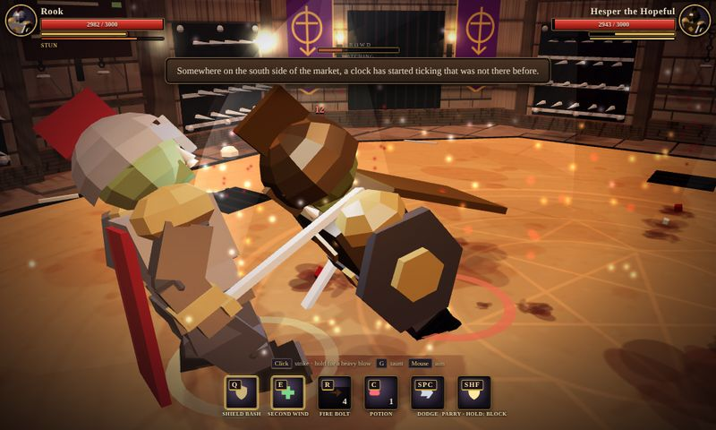
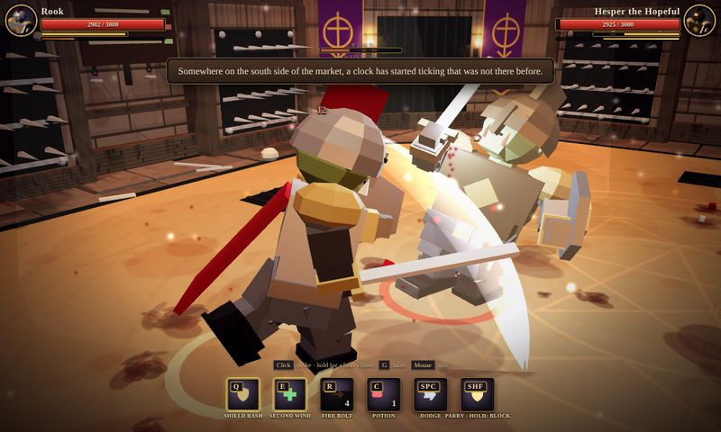
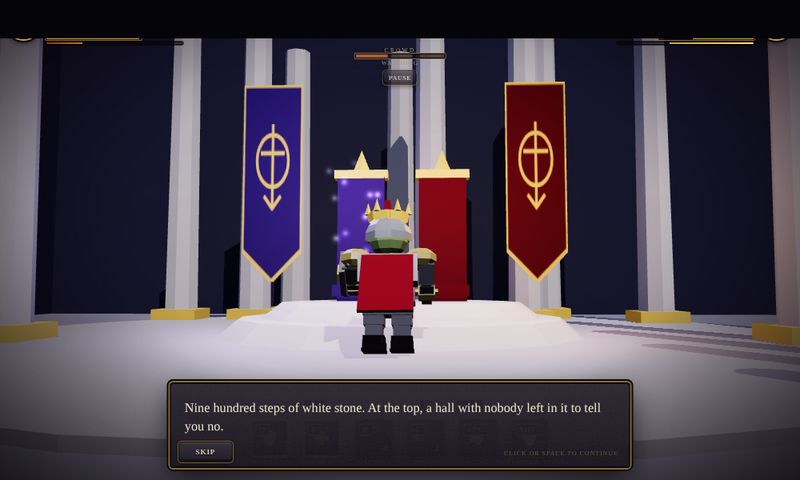
How it looked: from the first build to today
Each row is an old version checked out of the repo and run as it was then, with the same script: the title, the fighter builder or market, and the start of a bout. Times are Eastern. Read top to bottom to see the game find its look in about 39 hours.
"Underground Syndicate": painted 2D
The first slice is 2D. Painted art from the art-direction handoff is the backdrop for the title, the market (places marked on the picture) and the pit, with a small figure on top. Four classes, five fighters.
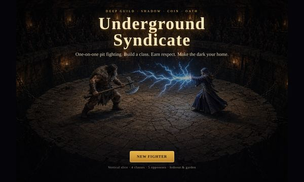
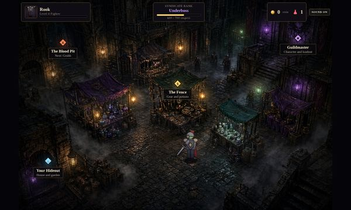
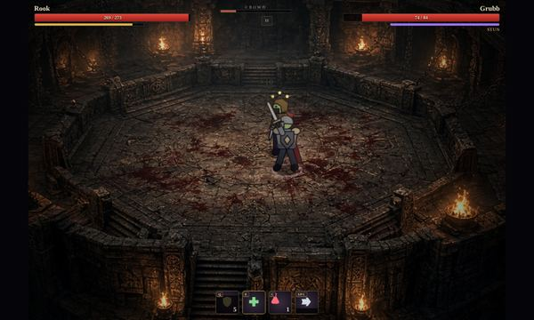
Rebuilt in real 3D
An hour later it is rebuilt as true isometric 3D on three.js: a lit stone pit, a blocky street, a model you can turn in the builder. Playable in phone portrait and on a desktop.
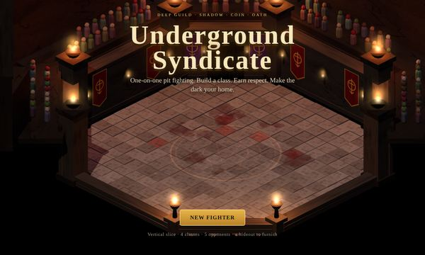
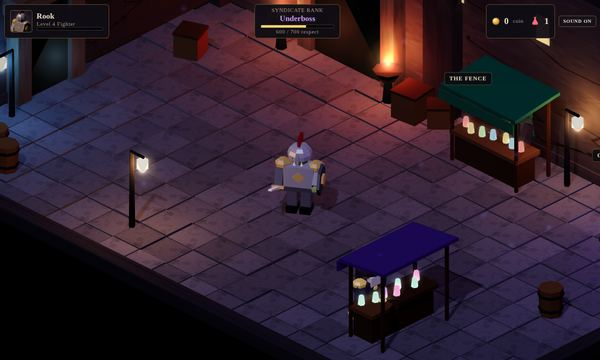
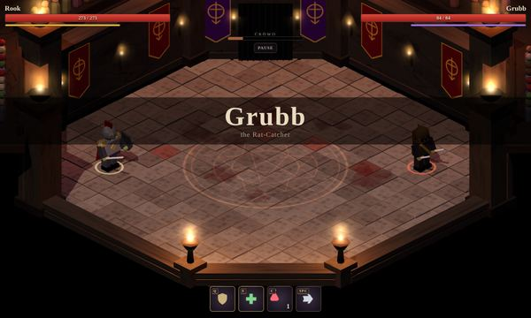
It becomes Guttercrown
The new name, the red-and-gold logo and the carved stone menu arrive. The studio boot and an opening film follow within the hour.
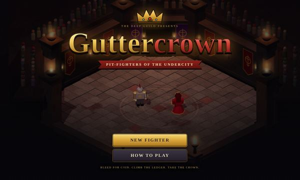
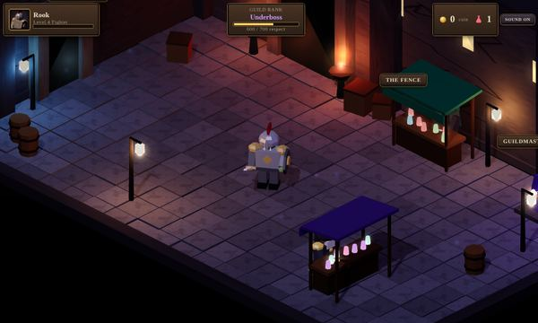
The Lamp Market
The street becomes a plaza around the First Lamp, with stalls, the Fence, the Guildmaster and Marc's table. The builder sits over the live market.
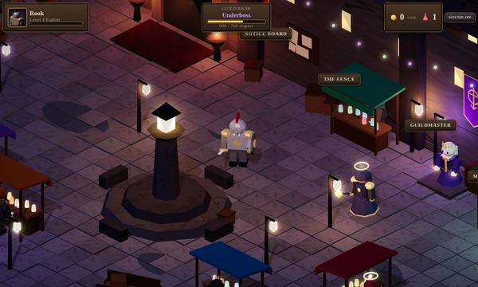
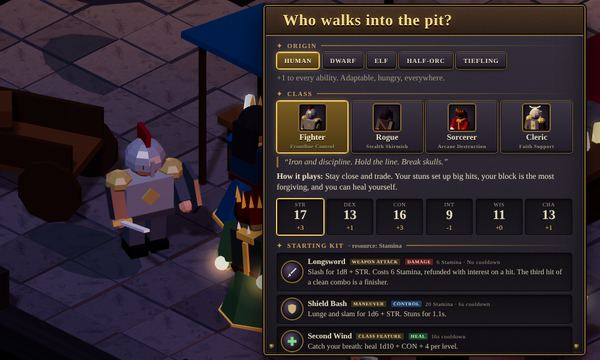
Druid, Warlock, finishers, the crowd
By midday the builder has six classes, the market has a story line and named regulars, and bouts open with generated challengers like Hesper the Hopeful.
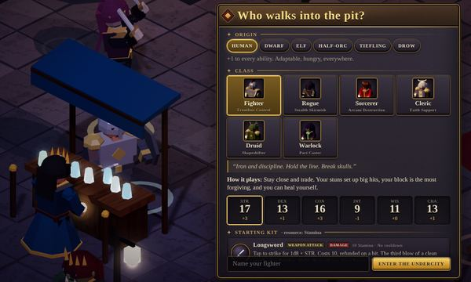
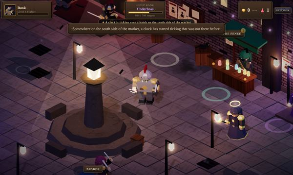
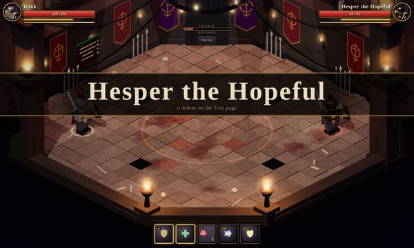
Last night's reviewed build
The pit gets sand, dressed stone and spike walls; the builder becomes six steps; the title gains Watch the Intro. This is the build the first version of this report looked at.
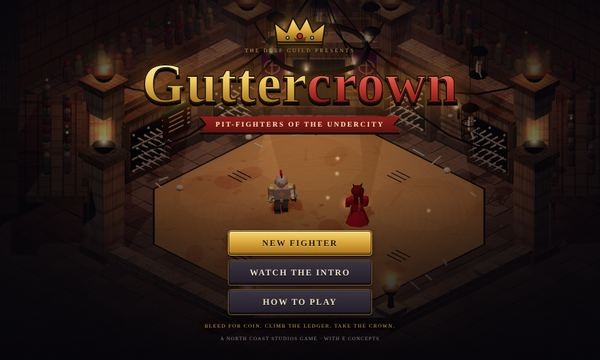
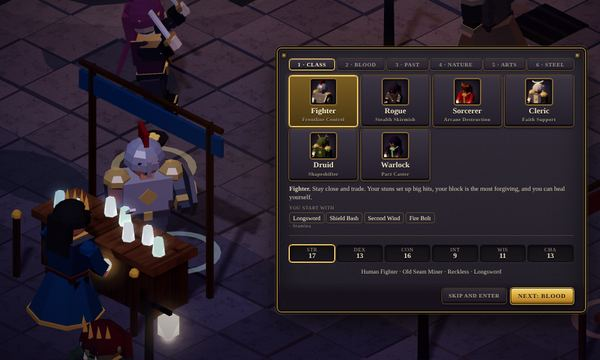
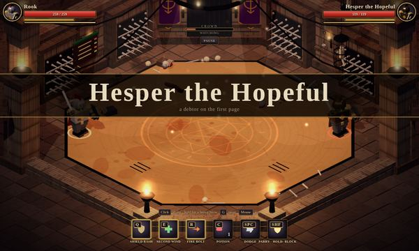
Today
Real lighting and shadows, per-weapon fighting, a reshot opening film and a filmed ending. See the frames above.
A content problem to fix first
David Roseinbeirg will very likely be read as an antisemitic caricature. I do not think that is the intent, and it may be a friend's name used as a joke. But a stranger on a Steam page sees all of this together:
- a Jewish-sounding surname;
- a money-lender who owns people through debt ("David lends at a rate that should be a crime");
- a hidden room full of gold under the city, with rings on his hands;
- a backstory where two crowns expelled his "house" "in a week, like dogs", after his people profited from both sides of a war;
- a plan to rule the realm from behind the throne, and long monologues of contempt for every other people.
Each piece is a familiar fantasy villain beat. Together, attached to that name, they match a very old and very recognisable smear, and reviewers will say so. It is also the kind of thing that gets a store page reported.
The fix keeps the character. Give him a name with no real-world ethnic reading, and move him off money: he trades in time and owed hours (the hourglass houses, the clocks, the Hour Garden already point that way). Owed time instead of owed gold, a room of stopped clocks instead of a room of gold, expelled for breaking time rather than for profiting from a war. If he is named after someone you know, a private in-joke can live in a Codex entry or the credits instead.
Today it got stronger, not weaker. The reshot opening film puts him on a gold throne in a black hat with the caption "while he watches from his gold", and docs/NEXT.md spells out his plan as making his people "a homeland" so "the Roseinbeirg family can move into the realm's lands". Those lines push the reading further. The design notes say "the discomfort is the point", and a hateful villain is fine; the problem is which real-world people he maps onto.
How the story is layered
Guttercrown tells its story through a career, not chapters. Three threads run under it: the Ledger climb in the pit, David's pact, and the throne above. This is the order a player meets them.
Arrive in debt. Build a fighter. Your past sets why you owe the Guild.
The undercard. Two to four bouts against generated names earn each named gate. A fresh set of names is drawn for every new fighter.
Nine gates. Grubb, Dolly Two-Teeth, Sister Maul, Ansel Vane, Kessa Cinderhand, Old Sallow, Brakk Ironjaw, Iron Beatrix, then Vexa for the crown. Ranks run Fresh Meat to Pit Legend.
The crown. The Ledger never closes: challengers keep coming. If you are David's, your Tally rides out on raids: rob a caravan, harry the tribes, burn a village.
The Long Stair opens after two defences if you are bound, five if you are not. Captain Hale Morrow, then King Vilhelm, then Queen Eerin.
The ending is set by the pact: From the Bottom (never bound), The Vessel (bound and still in debt), The Ash Throne (debt paid, villages burned), Paid in Full (debt paid, nothing burned).
Which thread is active when
What the layering gets right
- The throne is present from the first bout through proclamations, the tithe and "a plain cloak". By the time you climb the Stair, you know who is up there.
- The ending is decided by how you played, and now it is filmed: one shot changes with your ending, and the closing lines name what you did.
- Losing feeds the story. A death is a step toward David, not a reload.
- The world reacts to who you are: your people, your trade, your name in other mouths.
Where it loses the thread
- The middle is the longest and has the least plot. Gates one to nine are bios and taunts. The named fighters are memorable but they do not change, return or interact.
- The King and Queen appear in person only at the very end. Vilhelm's cloaked visits are hints; one confrontation mid-climb would give the last act weight.
- Vexa's bio promises a hand-over ("still waiting for someone worth handing it to"). The new ending film pays off the throne, but the crown bout itself still has no scene.
- A skilled player can miss most of David. The summons at Enforcer helps, but the Garden, raids and three of four endings need you to be bound.
World history, as the Codex tells it
The world has three dated anchors (forty years since the sealing, seven since Vexa, now) and several undated ones. The war now appears in the opening film, but it still has no year, so nobody can say whether David's grudge comes before or after the mines ran dry. One sentence in the Codex would fix that.
Against its sources
Guttercrown's rules come from D&D 5th edition, its loop from pit-fighter career games, and its death mechanic from the roguelite habit of making death part of the story. Here is how faithfully it adapts each, and where it is its own.
| Source idea | Guttercrown | Fit |
|---|---|---|
| Six ability scores | Kept, with new jobs: Intelligence speeds cooldowns, Charisma earns coin and respect | Its own |
| Dice damage (1d8 + modifier) | Every blow and spell rolls dice in real time | Faithful |
| Classes and subclasses | 6 of the 12 classes, 2 subclasses each; druid and warlock subclasses are new | Faithful |
| Spell slots | Replaced by cooldowns and a per-class resource (Stamina, Focus, Mana, Faith) | Its own |
| Levels 1 to 20 | Levels 1 to 10, with feats at set levels | Compressed |
| Skill checks against a DC | Street events and Tally jobs roll a score against DC 10 to 14 | Faithful |
| Death saves | No death saves; David brings you back and keeps count | Better |
| Arena career: train, fight, climb | Undercard, gates, crown, defences, plus home and crew between bouts | Close |
| Death as story progress (the roguelite "go back to the house") | Each death is a scene with David; three binds you | Close |
| A rival who climbs alongside you | "Moments" include a rival, but the nine gates are one-off | Thin |
The D&D licence question
The free 5e System Reference Document can be used commercially under a Creative Commons licence with a credit line, and it covers the core rules and many spell names. But it includes only one subclass per class. Under SRD 5.1 the fighter gets the Champion, the rogue the Thief, the sorcerer the Draconic Bloodline, and the cleric the Life Domain. Guttercrown also uses Battle Master, Assassin, Wild Magic, War Domain and Light Domain, which come from the Player's Handbook. Renaming those five (and checking any spell names outside the SRD, like Hex) is cheap insurance before a store page. I am not a lawyer; a short review before release would settle it.
Against SOOTBORN
The overlap
- Both are an undercity under a sealed, pristine ruling city, with a ledger of debts, a tithe sent up a stair or lift, and a hero climbing to the top.
- Names cross over: Kael has gone from the random fighter list today, but Sorrel remains, and Guttercrown still has Hale Morrow and Old Marrow Tibb beside SOOTBORN's Dace Morrow, Marrow and Edric Sorrel.
Why it matters
- If both ship, players will notice the same premise twice. Leaning into one shared universe is an option; otherwise pull the premises apart.
- At minimum, give Guttercrown's random name lists their own names so a SOOTBORN lead does not turn up as an undercard debtor.
Mechanics
The climb: who you fight, and how hard they hit
Today's balance pass raised every named fighter (+7% health, +5% damage), but the shape is the same: Vexa, the pit champion, hits softer (0.85) than the two gates before her (Brakk 1.03, Beatrix 1.01). She dodges and reacts faster and has an ultimate, so it may still be the hardest fight. Check by play that the crown bout does not feel like a step down.
Everything that feeds a single bout
In the pit
- Resource and tempo: each swing costs stamina, refunded on a hit. Three clean hits make a finisher.
- Defence: guard, parry window, perfect dodge, posture break, counters on wind-up, punishes on recovery.
- Big moments: heavy blows, wall slams, spike walls, five class finishers each plus weapon, racial, casting, animal-form and environmental finishers, ultimates, the crowd meter and its frenzy.
- Build: 6 classes × 6 peoples × 2 subclasses, 7 pasts, 6 natures, 4 bents, 4 cantrips, 31 weapons with mastery, 13 kits and 12 sets.
Before the pit
- Nine preparation slots: tonic, meal, song, scouting, rest, set bonus, charm, contract, a second.
- Home: 34 furniture pieces plus floors, walls and garden; comfort; sleep, train, brew, cook.
- Money: purses, a win streak, ten contracts, Marc's loans, David's loans, six games of chance, bets on other bouts, five grades of gear from the Fence.
- Crew: the Tally runs jobs over several bouts; raids once you are bound.
The depth is real, and the combat itself sounds like the most carefully tuned part. The risk is that a new player meets nine preparation slots, twenty market stops and four currencies (coin, chits, wizard gold, respect) before they have learned to parry. The guide, the "what is new" line and the tidy-up pass show you have already felt this.
Scorecard
Succeeding
- The writing. Dry, specific, funny. "The chalk crown is to be left where it is." The Codex, proclamations and taunts give the world a voice no system could.
- Systems depth with an end. Every layer leads somewhere: the hideout pays, the Tally feeds raids, the raids decide an ending.
- Death as story. Losing moves the plot instead of costing a reload, and the Hour Garden is a memorable idea.
- Reactivity. Your people and trade change what the market, the Keeper, David and the King say to you.
- Replay. A fresh ladder of names per fighter, an open card, and four endings.
- It has been played, and now it is tested. Three balance passes, one after controller play, simulated careers for every class, and repo scripts that film bouts, cinematics and endings.
- Spectacle. The finisher list is now enormous, and each one ends on a weapon left in the body or a camera beat. The new opening film and ending film give the game a real start and end.
- Platform care. Phone portrait and desktop layouts, safe-area padding, touch, keyboard and pad prompts, a Performance setting.
Lacking
- The David content problem above. This is the only item on the list that could sink a release on its own.
- Clarity. Too many layers arrive before the player needs them. Gate systems behind ranks more aggressively.
- Mid-game story. Nine gates of standalone opponents. No returning rival, no ally who changes, the royals offstage.
- Class coverage on the ladder. No named druid and no named drow fighter; three rogues among nine gates.
- The Outlands. The map card says "None of it is any business of yours. Yet." Three raids live there, and that is all.
- Code health. Later modules wrap earlier functions and inject HTML into cards after they render. That works, but every new layer makes the order matter more and changes riskier.
- Offline and resilience. The repo now bundles three.js, but the published page still loads it from a CDN; with no network there, the game shows nothing.
- Checks before publishing. This morning's sound pass went live for half an hour with a crash in the opening film. It now has its own test; running the filming scripts before each publish would catch the next one.
Known bugs and risks
| Level | Issue | Source |
|---|---|---|
| Fixed 11:30 | The opening film stopped at shot 11 of 22 for every new fighter (from the 11:03 sound pass). Fixed with a guard, a safer main loop and a new test. Checked on the 11:30 build: the film plays through. | Reproduced on 11:03 and 11:20; fixed on 11:30 |
| Fix first | David Roseinbeirg reads as an antisemitic caricature, now also in the opening film (see above) | Build text and film |
| Fix first | Five subclass names come from the Player's Handbook rather than the free SRD | Build data |
| Check | The published page loads three.js from cdn.jsdelivr.net; the repo's bundled copy isn't used there | Build head |
| Check | Vexa (0.85) deals less damage than Brakk (1.03) and Beatrix (1.01) | Build data |
| Check | The market's frame cost is dominated by its animated figures; never measured on a phone (README) | Repo README |
| Visible | A story line ("a clock has started ticking…") is drawn across the top of the fight, over the arena | Seen in capture |
| Visible | Sorrel, Morrow and Marrow still overlap with SOOTBORN's cast | Build text |
| Code | Nine places in the build still say "Underground Syndicate"; the repo folder keeps the old name on purpose | Build code |
| Code | Patch chains: later modules wrap earlier functions and edit their HTML after it renders (now 60 modules) | Build code |
| Check | The 11:20 and 11:28 sound fixes were tested by script, not on the phone where the static and stalls happened | Commit notes |
| Untested | A real phone, a physical controller, sound by ear, balance against people rather than the AI player (README) | Repo README |
Ideas: unfinished, missing, unexplored
Unfinished
- The Outlands: Fenrow and Low Barrow are named in an ending and nowhere else.
- The eleven-year war between the United Realms and Eireania, and the expulsion. Told once in a monologue.
- The Queen as a faerie with wings, fought as a sorcerer reskin. Give her one move nobody else has.
- Vexa's hand-over of the crown.
Missing
- A rival who climbs the ladder alongside you and turns up at the Stair.
- A mid-climb scene with Vilhelm out of his cloak.
- A named druid and a named drow among the gates.
- Who you were before the debt paying off at the end (your past shapes the start; let it shape the last line).
Unexplored
- Tag bouts with a Tallyman as your second, using the crew you already have.
- The Ledger-Keeper as an optional secret fight.
- The first of the month: a tithe day calendar that changes prices, events and proclamations.
- The crowd choosing the next bout, using the crowd meter you already track.
- A shared universe with SOOTBORN, if you want the overlap to be deliberate.
Small, high value
- Unlock the Wisp Table, Tally and loans at later ranks.
- Collapse the nine prep slots into one "Ready" summary with a single button to auto-buy the usual.
- Publish with the bundled three.js, as the repo already does.
- Run
cinef.js,bout.jsandfinale.jsbefore every publish. - A one-page canon sheet with years for every Codex event.
Development timeline
Now dated from the repo. Guttercrown started as "Underground Syndicate" at 8:59 pm on 17 November, became Guttercrown an hour later, and has had 110 commits in 39 hours.
Proposed order from here
Check the sound on the phone
Play a first bout on the phone to confirm the static and stalls are gone. Keep running cine-plays-through.js and the filming scripts before each publish.
Release blockers
Rework David's name, look and motive. Rename the five PHB subclasses. Publish with the bundled three.js.
First hour
Gate systems by rank, one prep summary, a guided first three bouts. Watch someone new play it on a phone and a pad.
Middle of the climb
A recurring rival, a Vilhelm scene, a scene for winning the crown from Vexa, a druid and a drow at the gates, the champion's numbers.
Code health, then ship prep
Fold the patch chains into the functions they wrap; phone performance budget; trademark and licence check; canon sheet; Steam wrapper.